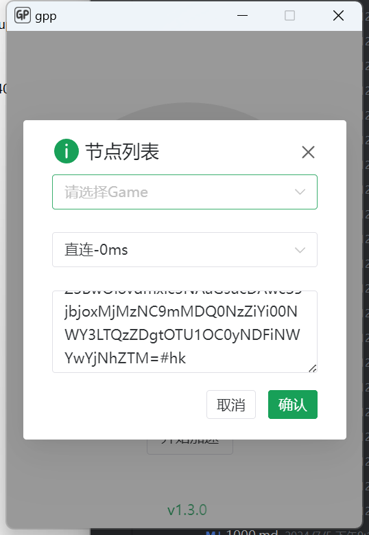

自建GPP游戏加速器
- 作者:
- 淡白
- 创建时间：
- 2024-07-06 10:36:00
- 游戏加速器 sing-box golang
摘要：本文是关于如何搭建和使用GPP加速器的教程。GPP是一款基于sing-box开发的加速器，通过tun模式接管应用程序的网络流量，并将其转发到服务端出口，从而实现加速的效果。需要注意的是，GPP本身并不提供加速线路，需要自行选择具有良好线路质量的服务端。 在搭建服务端方面，作者提供了一些服务器选择的建议，并且给出了一些用过的商家的服务端推荐。然后，文章介绍了如何使用GPP的安装脚本来进行服务端的安装。安装的过程包括输入安装路径、监听地址和端口等信息，以及选择加速协议。安装完成后，可以使用`/usr/local/gpp/run.sh start`命令来启动服务端。 在客户端方面，需要从GPP的发布页面下载对应系统的客户端，并以管理员身份运行。然后，在客户端页面上点击`Game`或`Http`字样，弹出节点列表窗口，并粘贴服务端的链接以导入节点。之后，在节点列表中选择加速节点，就可以开始使用加速功能。
GPP
本文是从0到1搭建使用GPP加速器的教程
该加速基于sing-box开发的套gui程序，加速原理是通过tun模式接管应用程序网络流量转发到服务端出口,只是提供了一个快捷使用的方式，本身不提供加速线路。
服务端搭建
服务器选择
因为要加速游戏所以服务器的线路质量要好，简单一点可以直接购买阿里云香港的轻量云应该勉强能用。
下面有我用过的其他商家的服务端
服务端安装
进入正题使用仓库中提到的安装脚本linux适用
bash <(curl -sL https://raw.githubusercontent.com/danbai225/gpp/main/server/install.sh)
安装流程如下:
root@hkg7-20240515005653f71f78:~# bash <(curl -sL https://raw.githubusercontent.com/danbai225/gpp/main/server/install.sh)
欢迎使用 gpp 服务端安装脚本
输入安装路径 (默认是 /usr/local/gpp):
请输入监听地址（默认0.0.0.0）:
请输入监听端口（默认5123）:
请输入你的客户端入口地址(有中转就是中转地址不填默认当前服务器ip+端口): hk.p00q.cn:12334
请选择一个选项：
1) shadowsocks
2) socks
3) vless
4) hysteria2
输入选项 (1-3): 3
您选择的协议为: vless
您输入的监听地址为: 0.0.0.0
您输入的监听端口为: 5123
安装路径为: /usr/local/gpp
您的入口地址: hk.p00q.cn:12334
Changed to directory: /usr/local/gpp
检测系统架构...
下载服务端 。。。
Downloading file: gpp_1.3.0_linux_amd64.tar.gz
% Total % Received % Xferd Average Speed Time Time Time Current
Dload Upload Total Spent Left Speed
0 0 0 0 0 0 0 0 --:--:-- --:--:-- --:--:-- 0
100 5539k 100 5539k 0 0 4268k 0 0:00:01 0:00:01 --:--:-- 6411k
Download complete
Extracting files
Extraction complete
安装完成,请执行 /usr/local/gpp/run.sh start 启动服务端,执行 /usr/local/gpp/run.sh stop 停止服务端
请为您的节点取一个名字: hk
入口地址是: hk.p00q.cn:12334
导入链接：Z3BwOi8vdmxlc3NAaGsucDAwcS5jbjoxMjMzNC9mMDQ0NzZiYi00NWY3LTQzZDgtOTU1OC0yNDFiNWYwYjNhZTM=#hk
其中需要注意的是客户端入口地址如果你是要走中转那么这个就填你中转的地址
然后执行/usr/local/gpp/run.sh start启动服务端
客户端
从releases下载对应系统的客户端
安装后以管理员身份运行,点击页面上的Game或Http字样弹出节点列表窗口，在下方粘贴服务端的链接完成节点导入。
在节点列表选择你的加速节点，如何开始加速。
